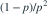

各次试验相互独立，每次获得物品 1、物品 2、无收获的概率分别为 0.2、0.2、0.6 的独立试验。集齐两种物品所需总次数 T 的方差为？
- A7.5
- B25
- C43.75
- D23.75
我已思考，展开答案与解析
正确答案：D
- 写 ，分别是首次获得物品与随后获得缺少物品的等待次数。独立试验的重启性质使这两个等待时间独立，参数分别为 0.4、0.2。
- 记录首次成功序号的几何方差是

，所以方差和为 。
易错提醒首次成功序号型几何分布的方差是 (1−p)/p²，不是 1/p²。
JYSG · 432精选 · 册内复旦大学432·2025年·8；方差拆解；PDF第41页（印刷页39）
原题知识点延伸